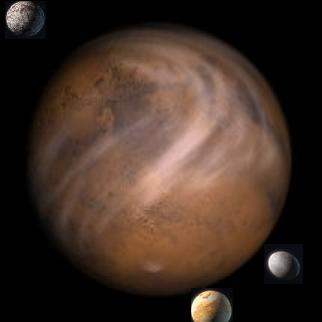

| Rubis de la Gorgone | |
|---|---|
 | |
| Statut | capitale du Haut Commissariat |
| Coordonnées | donnée confidentielle, veuillez contacter l'ambassade du Haut Commissariat pour plus de renseignements |
| Surface émergée | 92% |
| Cycle annuel | 4 années standards |
| Cycle journalier | 26 heures standards |
| Ville(s) principale(s) | Lotipryss |
| Lunes | 3 |
| Espèces répertoriées | Humains 85%, mutants 11%, diablotins jagarguyans 3%, vampires 0,001%, autres moins de 1% |
| Langue officielle | non encore déterminée |

Description :
Servant de Capitale administrative au Haut Commissariat, cette planète a la particularité d'avoir placé ses plus grandes villes sur ses satellites naturels et notamment Lotypriss, nom à la fois de sa plus grande lune et du centre névralgique du Troisième secteur en conccurence avec le marché de contrebande du secteur 0.
De nombreux vestiges archéologiques, des piliers titanesque aux plus humbles poteries en passant par des statues, habitations et tombeaux, parsèment la planète. Leur origine est au centre de nombreuses controverses scientifiques.
Histoire :
La planète semble avoir abrité une mystérieuse civilisation antique tandis que les lunes ont été colonisées plus récemment. Lorsqu'Eva prit le contrôle de ce monde, quatre milliards d'humains y vivaient déjà. Après en avoir fait don au Haut Commissariat pour que celui-ci y place sa capitale, la planète prospéra sous l'égide de cette coalition jusqu'à devenir le monde riche et puissant qu'il est aujourd'hui.
Les membres du Haut Commissariat ont désigné Loudon Dodd, ancien renégat ayant servi sous les ordres d'Eva, comme gouverneur de cette planète puis comme ambassadeur de la coalition.